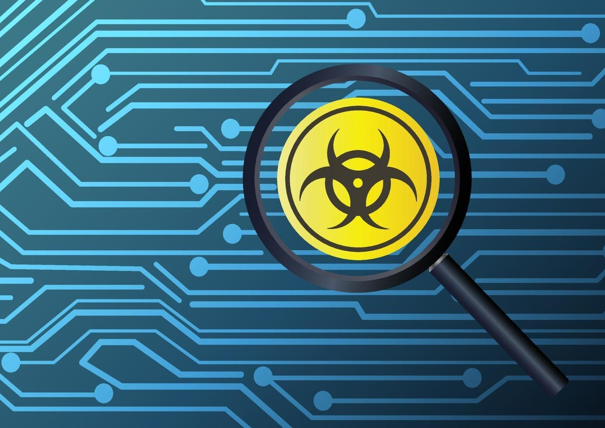

Эффективные методы удаления вирусов
Если ваш компьютер заражен вирусами, следуйте следующим шагам для их удаления:
- Сканирование антивирусом: Запустите полное сканирование компьютера с использованием антивирусного ПО.
- Изоляция и удаление: Изолируйте зараженные файлы и удаляйте их согласно рекомендациям антивирусной программы.
- Обновление программ: Обновите все программы на компьютере, чтобы устранить уязвимости, которые могли быть использованы вирусами.
